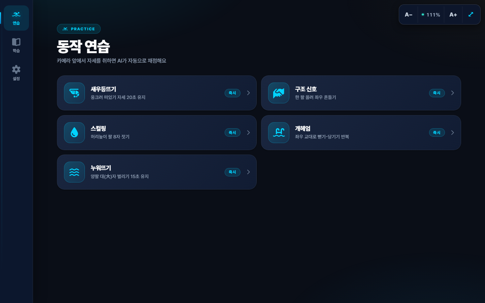
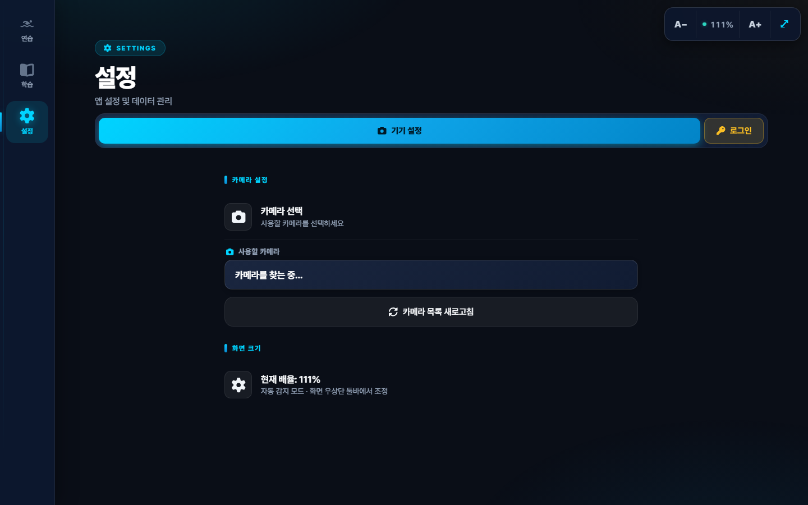
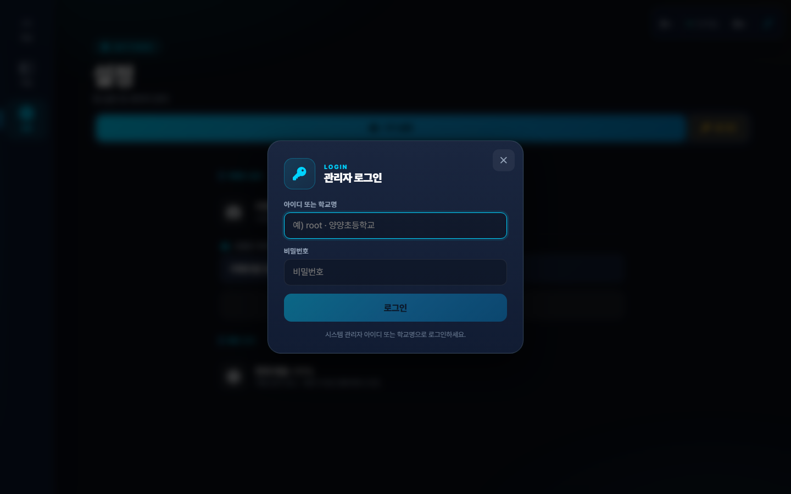
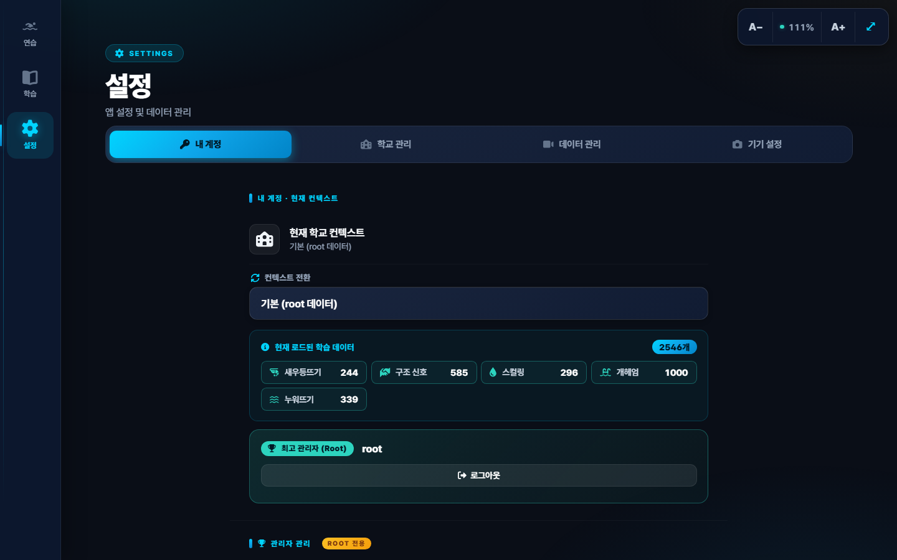
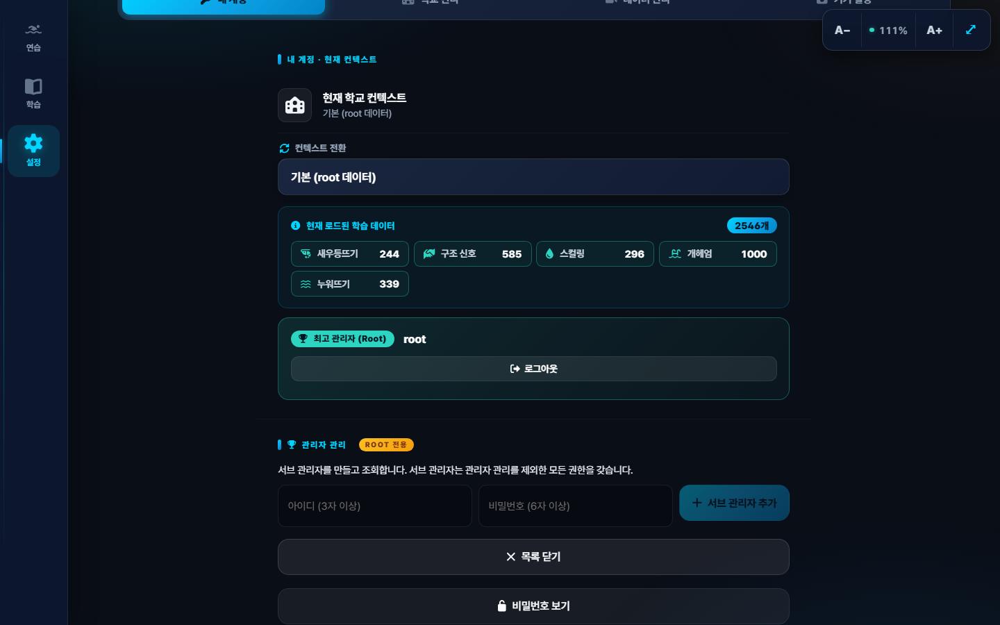
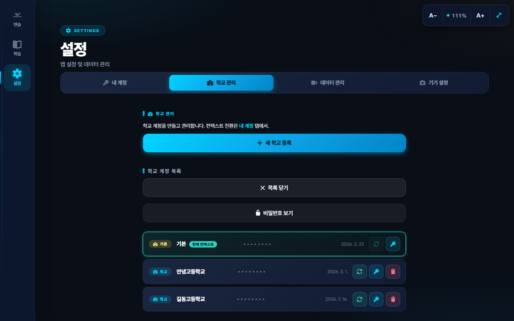
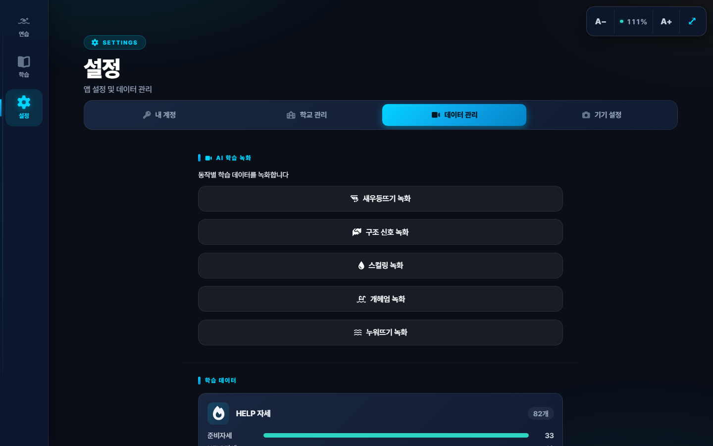
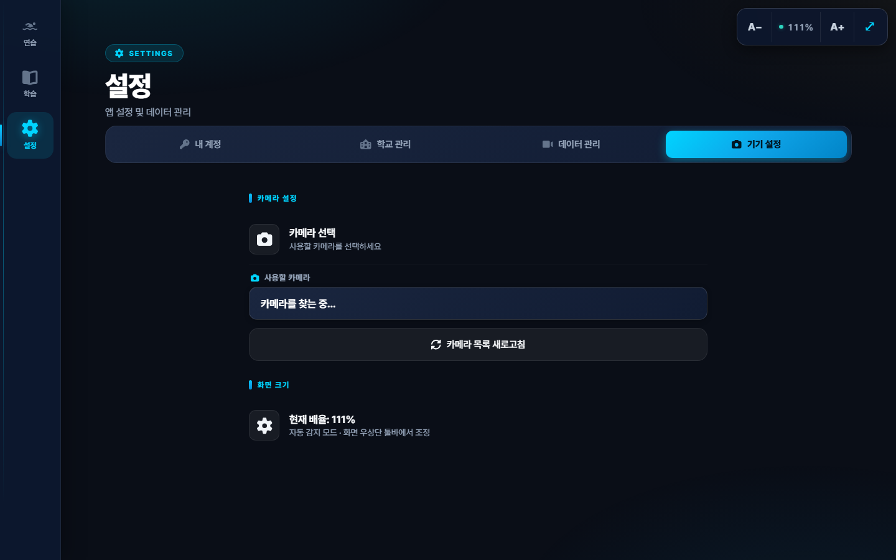
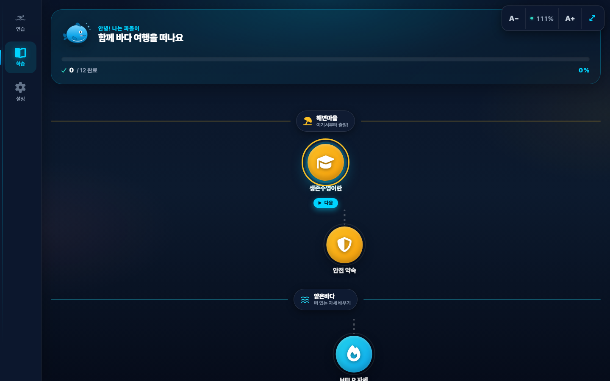
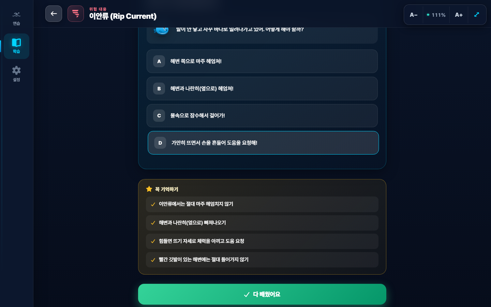

유치원·초등학교 설치·운영 안내서
생존수영 AI 트레이너는 웹캠 영상으로 학생의 자세를 실시간 분석해 자동 채점하는 교육용 프로그램입니다. 별도 설치 없이 인터넷 브라우저에서 바로 사용할 수 있습니다.
수업 진행 방식과 교실 환경에 맞춰 다음을 준비하세요.
브라우저(Chrome/Edge)에서 아래 주소를 입력하세요.
https://swim-survival-trainer.vercel.app첫 화면은 연습 탭입니다. 좌측(넓은 화면) 또는 하단(모바일)에 연습·학습·설정 3개 메뉴가 보입니다.

연습 탭 — 5개 동작 중 하나를 선택하면 카메라가 켜집니다.브라우저 주소창 우측 ⋮ 메뉴 → "홈 화면에 추가" 또는 "앱 설치" 클릭.
이후엔 바탕화면·시작메뉴 아이콘으로 앱처럼 실행할 수 있습니다.
첫 실행시 브라우저가 카메라 접근 권한을 요청합니다. "허용"을 선택하세요.
여러 웹캠이 있으면 설정 → 기기 설정 → 카메라 선택에서 원하는 카메라를 지정합니다.
우상단 A− / A+ 버튼으로 글자·요소 크기 조절 가능.
⤢ 버튼을 누르면 자동으로 이 모니터에 최적화된 크기로 조정됩니다.
(설정한 크기는 다음 실행시에도 유지됨)
설정 탭 → "관리자 로그인" 클릭.

설정 탭 — 로그아웃 상태. 큰 파란 "관리자 로그인" 버튼을 누르세요.단일 로그인 폼에 학교명과 비밀번호를 입력합니다.

로그인 모달 — 아이디에root(시스템 관리자) 또는 학교명 입력.
계정이 없으면 시스템 관리자에게 학교 계정 생성을 요청하세요 (아래 지원 문의 참고).
3단계 권한 구조입니다. 학교 담당 선생님은 학교 관리자 계정을 사용합니다.
root / 양양초등학교
로그인하면 설정 탭에 4개 서브탭이 나타납니다.

내 계정 탭 — 현재 학교 컨텍스트, 컨텍스트 전환, 학습 데이터 요약, 로그아웃 버튼Root 전용 · 관리자 관리 — 서브 관리자를 생성/조회/삭제할 수 있습니다.

관리자 관리 — "비밀번호 보기" 토글로 서브 관리자 비밀번호를 확인할 수 있음 (root 전용).학교 관리 탭 (root+sub) — 학교 계정을 등록하고 목록을 조회합니다.

학교 계정 목록 — 각 학교의 비밀번호 열람·변경·삭제 가능. 각 행의 🔄 초록 버튼으로 컨텍스트 전환.데이터 관리 탭 — 각 동작의 AI 학습 데이터를 녹화·업로드·삭제합니다.

데이터 관리 — 동작별 학습 샘플 수와 관리 버튼. 서버 저장·로컬 백업 지원.기기 설정 탭 — 로그인 없이도 접근 가능. 카메라 선택과 화면 크기 확인.

기기 설정 — 카메라 선택 dropdown과 현재 화면 배율.| 시간 | 단계 | 강사 조작 |
|---|---|---|
| ~5분 | 준비 | 앱 실행, 카메라 확인, 학교 로그인 |
| ~20분 | 이론 학습 | 학습 탭에서 이안류·저류·6대 동작 설명 |
| ~30분 | 실습 (순환) | 연습 탭 → 동작 선택 → 학생 한 명씩 5분씩 시연 |
| ~5분 | 정리 | 연습 종료, 필요시 데이터 저장 |
해변마을에서 시작해 얕은바다 → 넓은바다 → 위험바다 → 구조본부까지 12개 노드를 순서대로 배우도록 배치.

학습 탭 — 마스코트 파돌이가 안내. 아무 노드나 클릭해서 상세 학습.실제 사고 사례 기반 인터랙티브 시나리오 퀴즈가 포함됩니다.

이안류 상세 페이지 — SVG 애니메이션 도해 + 4지선다 시나리오 퀴즈 + 핵심 포인트A+ 버튼을 눌러 확대하세요. 또는 ⤢ 자동 감지 버튼을 누르면
이 모니터에 최적 크기로 조정됩니다.← 뒤로 버튼. 학습 콘텐츠는 좌상단 ← 화살표.
키보드 ESC도 지원.설치·사용 중 어려움이 있으시면 언제든 연락 주세요.
peter9167@naver.com
화상 지원(Google Meet, Zoom)으로 원격 안내 가능합니다.